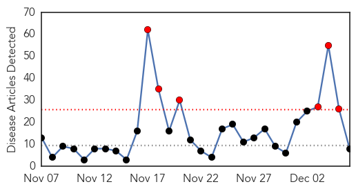
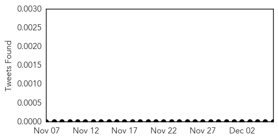

Influenza
30-Day Web Trend
6 alerts, 0 warnings

30-Day Twitter Trend
3 alerts, 0 warnings
Article Locations
Article Confidences

Top Articles:
- 0.998
- Louisiana seeing more flu cases than other parts of the country - KATC.com
- 0.998
- Flu shots recommended despite vaccine mismatch
- 0.992
- Local doctors continue to push flu vaccine despite C.D.C alert
- 0.990
- CDC Issues Warning For Americans To Prepare For Flu Season
- 0.866
- 5 British Columbia farms quarantined for bird flu
- 0.847
- Countries ban Canadian birds
- 0.845
- CFIA to provide Fraser Valley update this afternoon
- 0.523
- Westboro Baptist Flooded with Prank Calls Over Bird Flu Scare
Top Tweets:
-
No tweets found for Dec 06, 2014
Bubonic Plague
30-Day Web Trend
7 alerts, 0 warnings
30-Day Twitter Trend
0 alerts, 0 warnings

Article Locations

Article Confidences

Top Articles:
-
No articles found for Dec 06, 2014
Top Tweets:
-
No tweets found for Dec 06, 2014